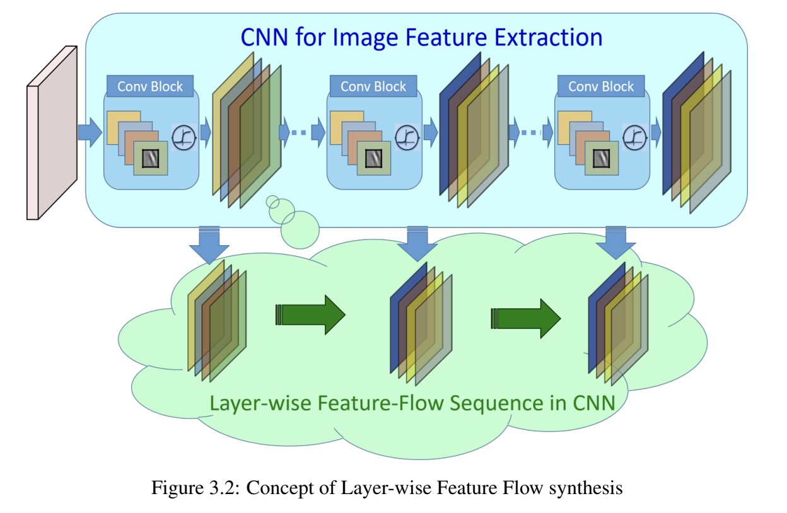

Current Research (PhD, 2022–Present)
RESOLFT time lapse imaging empowered by deep learning
Guillaume Minet, Anirban Ray, Francesca Pennacchietti, Giovanna Coceano, Florian Jug, and Ilaria Testa
Deep learning extended RESOLFT (REversible Saturable OpticaL Fluorescence Transition) nanoscopy by restoring low-SNR and sub-sampled acquisitions, enabling 5× longer imaging with 10× lower dose of light per frame, or a 4× increase in imaging speed for faster live-cell imaging while preserving ~60 nm resolution. This method enables reduced photobleaching and accelerated volumetric recording, revealing previously inaccessible sub-organelle dynamics in living cells.
GitHub | Preprint (under review) | AI Generated infographic 
Things that didn’t work earlier in the PhD
These ideas did not turn into papers, but they were not wasted. I am sharing them because failed directions often make the useful parts of research visible: the assumptions, experiments, and lessons that shaped what came next.
The wavelet project taught me that structured or interpretable representations are not automatically better if the model must also learn the inverse mapping. The latent dehazing work taught a related lesson about avoiding extra pipeline complexity unless it really improves restoration. Both lessons influenced HazeMatching and ResMatching, where I moved toward generative formulations that can model plausible restorations while staying grounded in microscopy.
Widefield Microscopy Image Dehazing using Diffusion Models in Latent Space | 2023
Anirban Ray
An earlier attempt at microscopy dehazing before HazeMatching. I tried to avoid regression-to-the-mean blur by replacing one-shot restoration with an iterative latent-space procedure: encode hazy images with a hierarchical VAE, predict clean latents, then learn a degradation operator that could step the latent back through progressively lower haze levels.
The learned latent degradation step was unstable and the iterative variants did not beat direct UNet/HDN baselines. I kept the research-panel version short here; the full note includes the cleaned-up equations, figures, CycleGAN-style degradation formulation, and failure analysis.
Read the full write-up | AI Generated infographic 
DeWaM: Deconvolution Wavelet Model for Microscopy Image Restoration | 2022
Anirban Ray
An early PhD attempt to make microscopy restoration more structured by learning wavelet analysis and synthesis filters, then doing supervised deconvolution in the learned coefficient domain. The setup moved from fixed wavelets to learned filters and finally to a coefficient-space restoration network.
The idea was interpretable but the result was negative: the learned-wavelet Step 2 variants did not beat a direct U-Net baseline in clean or noisy settings. The full note keeps the setup, equations, PSNR comparison, qualitative panels, and failure analysis together.
Read the full write-up | AI Generated infographic 
Past Research (Hitachi Ltd., 2018–2021)
Deep Learning for Microscopy Image Analysis
From 2018 to 2021, my research at Hitachi Ltd., Tokyo focused on developing deep learning–based systems for high-precision image understanding in biomedical microscopy. I worked on combining computer vision and AI-driven automation for identifying and quantifying objects of interest in complex visual data.
Publications:
Patents:
This phase of my work established a foundation in AI-driven visual understanding, bridging industrial automation with quantitative biological imaging, and set the stage for my later research in generative and flow-based models for microscopy restoration.
Past Research (Masters Thesis, 2016–2018)
Modeling the Feature Evolution in CNNs using LSTM

During my master’s studies at Nagoya Institute of Technology, Japan (2018), I explored the temporal dynamics of feature representations in Convolutional Neural Networks (CNNs) using Long Short-Term Memory (LSTM) networks. My research focused on understanding how features evolve across layers in CNNs and leveraging LSTMs to model these transitions for improved image classification performance. Read more about it in my thesis. | AI Generated infographic 
(Note that AI Generated infographics are representational only)